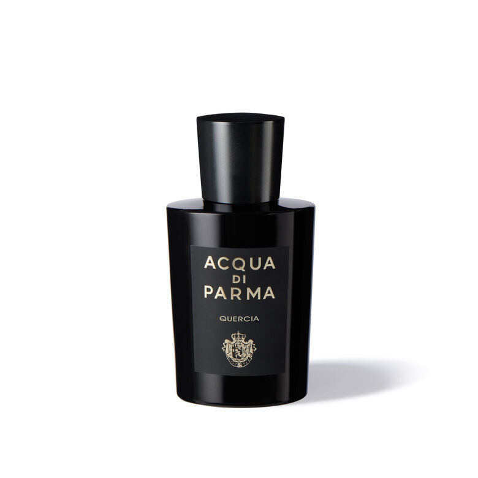
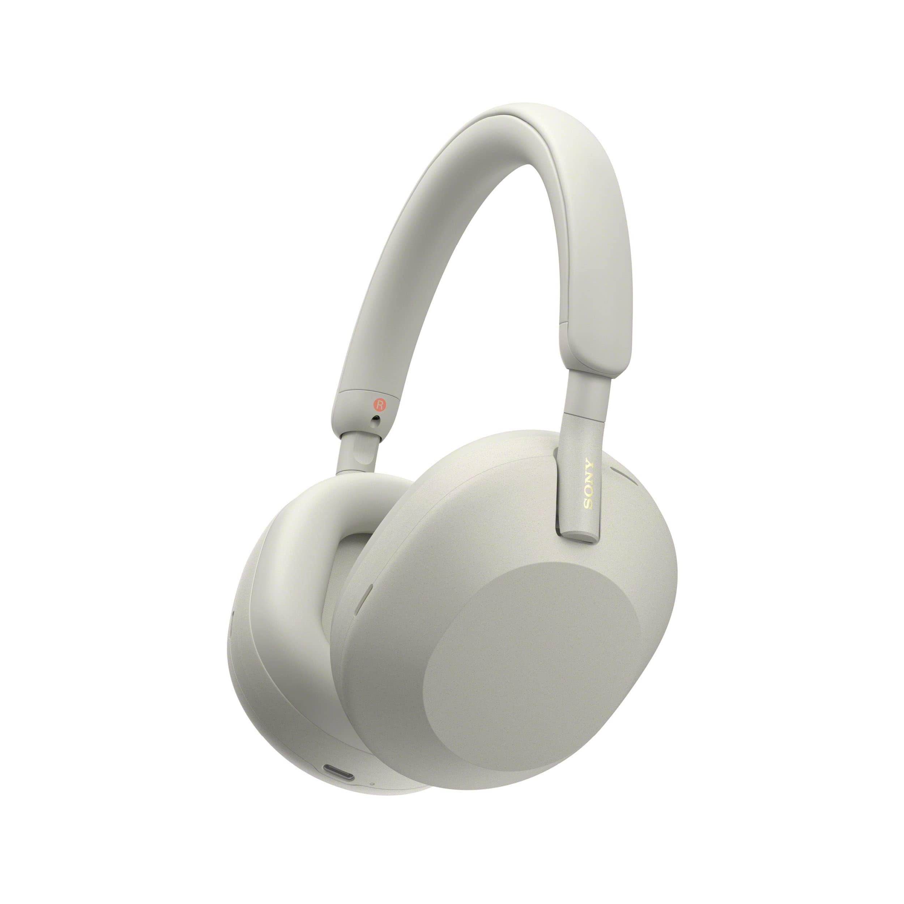
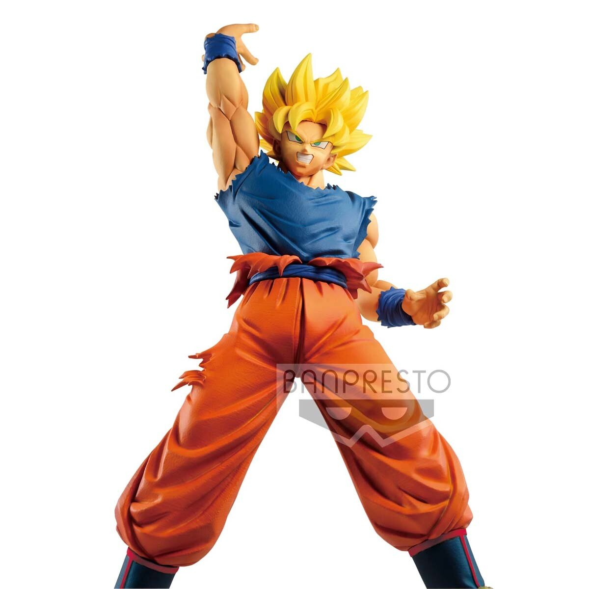

My Top 5 Items I own
I have created this list of personal items that I can confidently rank based on how meaningful they mean to me.
Here are some reasons why my collection is special
- They resemble areas of my personality.
- Each item is special in its own genre.
- Each item can benefit a type of collection.
This list will be in descending order.
- Aqua Di Parma
- Sony XM5 Headphones
- Super Saiyan Goku Statue
- Berserk Deluxe Volumes
- Creatine Monohydrate
Item 5. Aqua Di Parma - Quercia EDP

This is my recently purchased cologne, Aqua Di Parma - Quercia, that I recently fell in love with due to the elegant and radiant scent. This cologne really showed a key part in how I belive I should smell like based on any person's assumption.
Not only does it smell amazing, but when I put it on myself it makes the notes much more enhanced due to how I use it in a certain occasion. It is definetly not a daily scent I would wear, but more of a personal and special fragrance.
Item 4. Sony XM5 Headphones

These Sony XM5 Bluetooth headphones are a staple in my everyday woredrobe, activities, and most importantly personality. There is rarely a point in time where I am not thinking about, or listening to music. My favorite way of listening to music being with these headphones.
Their capability to make the music much more dramatic and effective to my conscience, especially when Radiohead is playing.
Item 3. Super Saiyan Goku Statue

I am a huge Dragon Ball fan. That said it is expected for me to own at least some sort of item that can fully show that the Anime and Manga has influenced me in my life several times. From the recent passing of the Creator and Mangaka, Akira Toriyama, Dragon Ball has had a deeper meaning to me.
I try to show that it has become a very important element in my life. This figure represents the sign of hope and heroism portrayed in the series. With his hand held high, Son Goku can use his heart and power to confront anything that comes in his or his friend's and family's way.
More about - Akira Toriyama
Item 2. Berserk Deluxe Volumes
I cannot describe how much these Berserk Novels mean to me other than claiming them as my most valuable possession that I could think of. Nothing other than these novels being a true work of art by the mangaka Kentaro Miura. His work on this series has influenced various amounts of pop culture and more importantly my own life.
The story of the duality of man, change, and healing have proven to be a very dedicated and powerful story.

Creatine is another staple of my day to day care, since it is the supplement I take on a daily basis for me to keep my size and shape. Since I am well endowed in my wieghtlifting career, creatine helps my performance and endurance during my workouts. I believe that it is one of the most important
supplements a person can take if they seek to improve their general health and improvement when it comes to any sort of physical training.